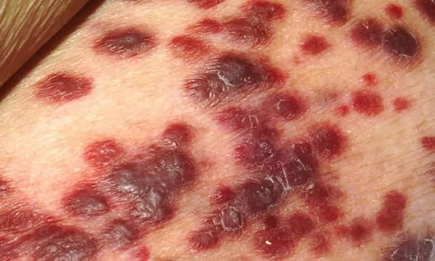

O HIV é transmitido através do contato com sangue infectado, sêmen, fluidos vaginais, fluidos retais ou leite materno. As rotas comuns incluem contato sexual desprotegido, compartilhamento de agulhas e transmissão de mãe para filho durante o parto ou amamentação.
Estágio inicial: sintomas semelhantes aos da gripe (febre, calafrios, erupção cutânea, suores noturnos, dores musculares). Estágio posterior: perda de peso, febre recorrente, diarréia crônica, gânglios linfáticos inchados, pneumonia e infecções oportunistas.
Use camisinhas consistentemente, tome profilaxia pré-exposição (PrEP) se em risco alto, use agulhas limpas e realize testes regularmente. Pessoas que vivem com HIV podem tomar terapia antirretroviral (TAR) para reduzir o risco de transmissão a praticamente zero (I=I: Indetectável = Intransmissível).
O HIV não tem cura, mas a terapia antirretroviral (TAR) controla o vírus, permitindo que as pessoas vivam vidas longas e saudáveis. A TAR deve ser tomada diariamente conforme prescrito.
